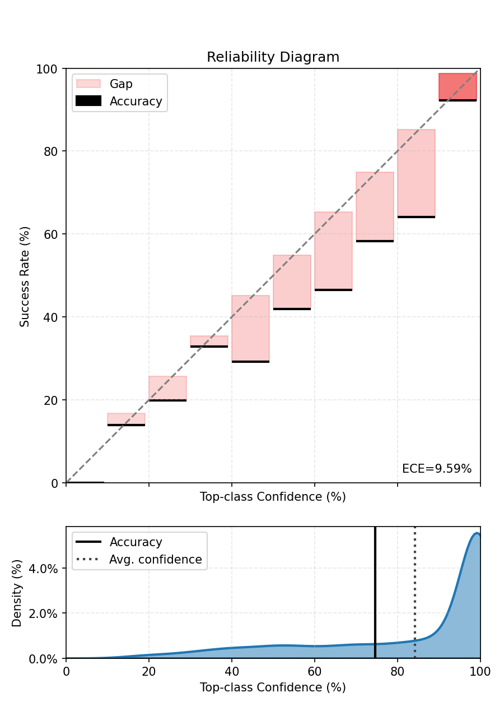
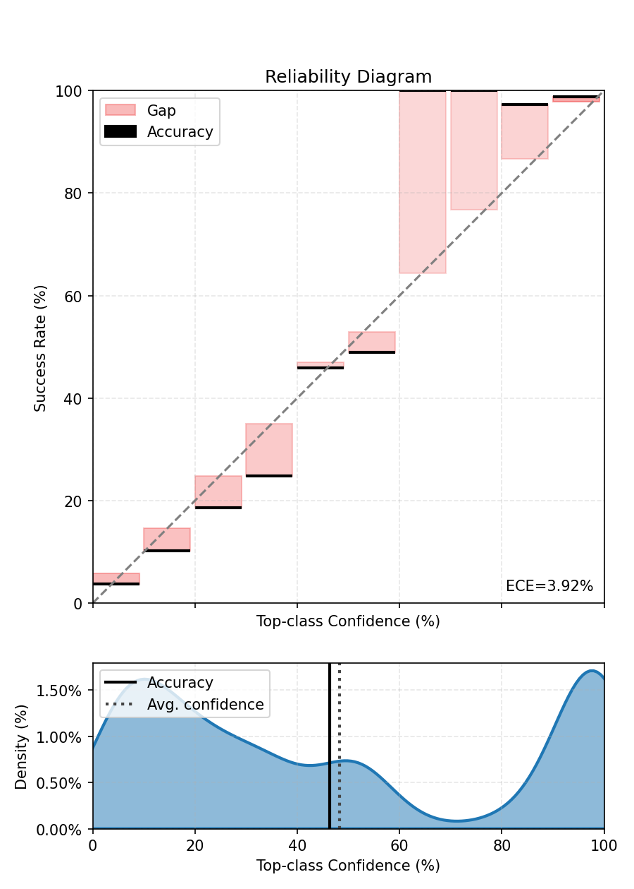
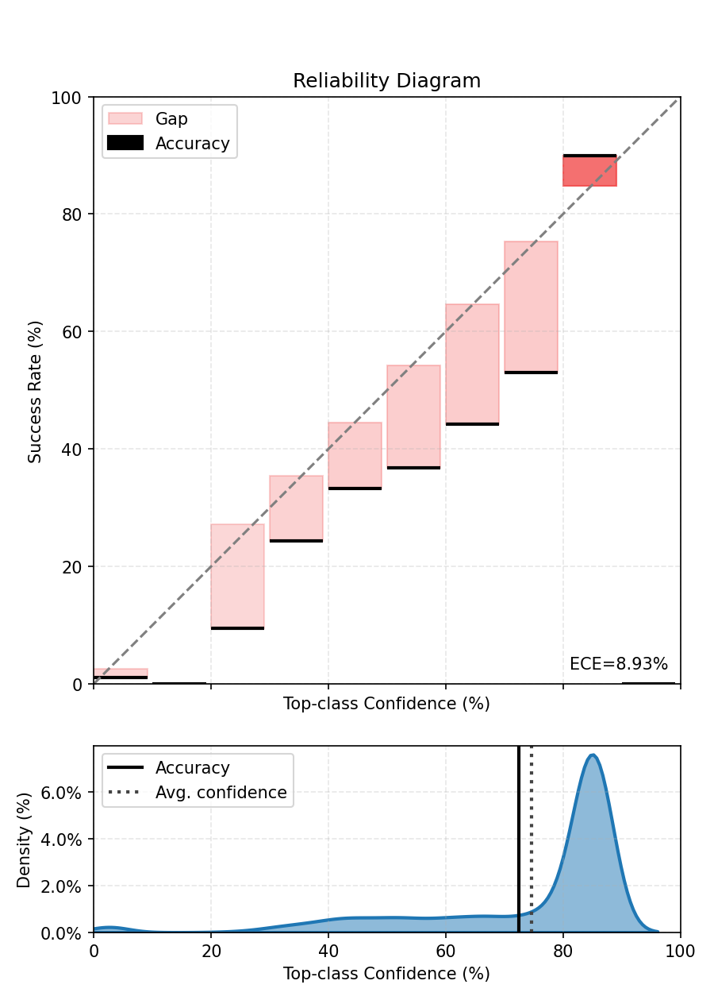
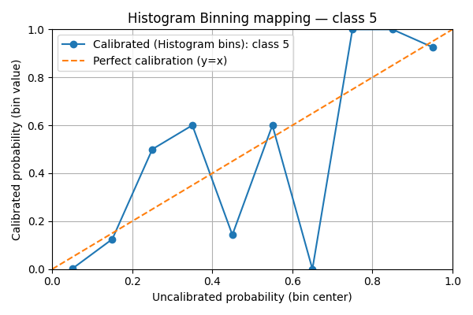
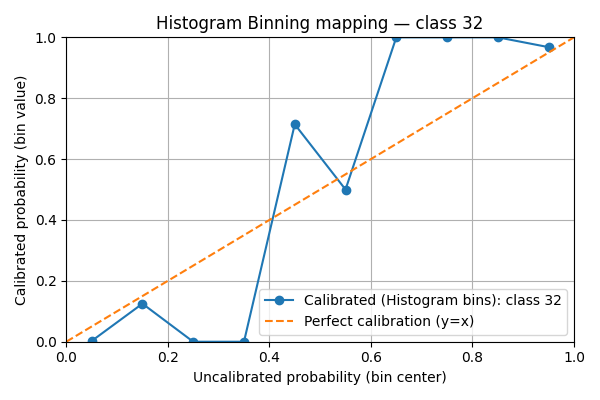
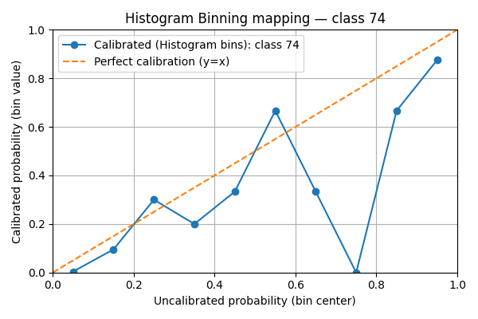
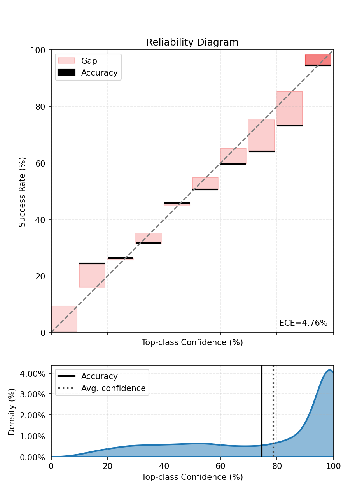

Note
Go to the end to download the full example code.
Histogram Binning, Isotonic Regression, and BBQ tutorial#
This notebook-style script demonstrates how to use existing post-processing scalers from the package to calibrate a pretrained ResNet-18 on CIFAR-100.
1. Loading the Utilities#
We import: - CIFAR100DataModule for data handling - CalibrationError to compute ECE and plot reliability diagrams - the resnet builder and load_hf to fetch pretrained weights - BBQScaler, HistogramBinningScaler, and IsotonicRegressionScaler to calibrate predictions
import torch
from torch.utils.data import DataLoader, random_split
from torch_uncertainty.datamodules import CIFAR100DataModule
from torch_uncertainty.metrics import CalibrationError
from torch_uncertainty.models.classification import resnet
from torch_uncertainty.post_processing import (
BBQScaler,
HistogramBinningScaler,
IsotonicRegressionScaler,
)
from torch_uncertainty.utils import load_hf
2. Loading a pretrained model from the hub#
Build a ResNet-18 (CIFAR style) and download pretrained weights from the hub. The returned config isn’t required for this demo but is shown for completeness.
model = resnet(in_channels=3, num_classes=100, arch=18, style="cifar", conv_bias=False)
weights, config = load_hf("resnet18_c100")
model.load_state_dict(weights)
model = model.eval()
3. Setting up the Datamodule and Dataloaders#
Prepare CIFAR-100 test set and create DataLoaders. We split the test set into a calibration subset and a held-out test subset for reliable ECE computation.
dm = CIFAR100DataModule(root="./data", eval_ood=False, batch_size=32)
dm.prepare_data()
dm.setup("test")
dataset = dm.test
cal_dataset, test_dataset = random_split(dataset, [5000, len(dataset) - 5000])
test_dataloader = DataLoader(test_dataset, batch_size=128)
calibration_dataloader = DataLoader(cal_dataset, batch_size=128)
0%| | 0.00/169M [00:00<?, ?B/s]
0%| | 65.5k/169M [00:00<07:24, 380kB/s]
0%| | 164k/169M [00:00<04:23, 640kB/s]
0%| | 360k/169M [00:00<02:27, 1.14MB/s]
1%| | 852k/169M [00:00<01:08, 2.46MB/s]
1%| | 1.80M/169M [00:00<00:35, 4.75MB/s]
2%|▏ | 3.70M/169M [00:00<00:17, 9.32MB/s]
4%|▎ | 6.29M/169M [00:00<00:11, 14.5MB/s]
5%|▌ | 8.62M/169M [00:00<00:09, 17.2MB/s]
7%|▋ | 11.5M/169M [00:00<00:07, 20.9MB/s]
9%|▊ | 14.4M/169M [00:01<00:06, 23.1MB/s]
10%|█ | 17.3M/169M [00:01<00:06, 24.9MB/s]
12%|█▏ | 20.5M/169M [00:01<00:05, 26.9MB/s]
14%|█▍ | 23.3M/169M [00:01<00:05, 27.3MB/s]
16%|█▌ | 26.5M/169M [00:01<00:04, 28.5MB/s]
17%|█▋ | 29.4M/169M [00:01<00:04, 28.7MB/s]
19%|█▉ | 32.4M/169M [00:01<00:04, 28.8MB/s]
21%|██ | 35.7M/169M [00:01<00:04, 30.0MB/s]
23%|██▎ | 38.8M/169M [00:01<00:04, 30.3MB/s]
25%|██▍ | 42.2M/169M [00:01<00:04, 31.3MB/s]
27%|██▋ | 45.9M/169M [00:02<00:03, 32.1MB/s]
30%|██▉ | 50.1M/169M [00:02<00:03, 34.9MB/s]
32%|███▏ | 53.6M/169M [00:02<00:03, 34.4MB/s]
34%|███▍ | 57.1M/169M [00:02<00:04, 26.1MB/s]
36%|███▌ | 60.0M/169M [00:02<00:05, 21.8MB/s]
37%|███▋ | 63.1M/169M [00:02<00:04, 23.8MB/s]
39%|███▉ | 66.3M/169M [00:02<00:03, 25.7MB/s]
41%|████ | 69.2M/169M [00:03<00:03, 26.2MB/s]
43%|████▎ | 72.3M/169M [00:03<00:03, 27.4MB/s]
45%|████▍ | 75.3M/169M [00:03<00:03, 28.2MB/s]
46%|████▋ | 78.4M/169M [00:03<00:03, 28.9MB/s]
48%|████▊ | 81.4M/169M [00:03<00:03, 28.9MB/s]
50%|█████ | 84.9M/169M [00:03<00:02, 30.8MB/s]
52%|█████▏ | 88.5M/169M [00:03<00:02, 32.1MB/s]
54%|█████▍ | 91.8M/169M [00:03<00:02, 30.1MB/s]
56%|█████▌ | 94.9M/169M [00:03<00:02, 27.8MB/s]
58%|█████▊ | 97.7M/169M [00:04<00:02, 26.9MB/s]
59%|█████▉ | 100M/169M [00:04<00:02, 27.0MB/s]
61%|██████ | 103M/169M [00:04<00:02, 27.1MB/s]
63%|██████▎ | 106M/169M [00:04<00:02, 26.2MB/s]
64%|██████▍ | 109M/169M [00:04<00:02, 26.9MB/s]
66%|██████▌ | 112M/169M [00:04<00:02, 27.9MB/s]
68%|██████▊ | 115M/169M [00:04<00:01, 27.9MB/s]
70%|██████▉ | 118M/169M [00:04<00:01, 27.0MB/s]
71%|███████ | 120M/169M [00:04<00:01, 27.4MB/s]
73%|███████▎ | 124M/169M [00:04<00:01, 28.5MB/s]
75%|███████▍ | 127M/169M [00:05<00:01, 28.9MB/s]
77%|███████▋ | 129M/169M [00:05<00:01, 27.7MB/s]
78%|███████▊ | 132M/169M [00:05<00:01, 28.0MB/s]
80%|████████ | 135M/169M [00:05<00:01, 28.3MB/s]
82%|████████▏ | 139M/169M [00:05<00:01, 29.6MB/s]
84%|████████▎ | 141M/169M [00:05<00:00, 29.2MB/s]
85%|████████▌ | 144M/169M [00:05<00:00, 28.3MB/s]
87%|████████▋ | 147M/169M [00:05<00:00, 28.6MB/s]
89%|████████▉ | 151M/169M [00:05<00:00, 29.1MB/s]
91%|█████████ | 154M/169M [00:05<00:00, 29.5MB/s]
93%|█████████▎| 157M/169M [00:06<00:00, 29.5MB/s]
94%|█████████▍| 160M/169M [00:06<00:00, 29.1MB/s]
96%|█████████▋| 163M/169M [00:06<00:00, 29.6MB/s]
98%|█████████▊| 166M/169M [00:06<00:00, 29.9MB/s]
100%|█████████▉| 169M/169M [00:06<00:00, 29.8MB/s]
100%|██████████| 169M/169M [00:06<00:00, 26.1MB/s]
4. Baseline ECE (before any calibration)#
Compute the top-label ECE for the uncalibrated model to have a baseline. We feed probabilities (softmax over logits) to the metric.
ece = CalibrationError(task="multiclass", num_classes=100)
with torch.no_grad():
for sample, target in test_dataloader:
logits = model(sample)
probs = logits.softmax(-1)
ece.update(probs, target)
print(f"ECE before calibration - {ece.compute():.3%}.")
fig, ax = ece.plot()
fig.tight_layout()
fig.show()

ECE before calibration - 9.590%.
5. Bayesian Binning into Quantiles (BBQ): fit and evaluate#
bbq_scaler = BBQScaler(model=model, device=None)
bbq_scaler.fit(dataloader=calibration_dataloader)
# Evaluate bbq model on the held-out test set
ece.reset()
with torch.no_grad():
for sample, target in test_dataloader:
# For multiclass this scaler is expected to return log-probabilities; apply softmax.
calibrated_out = bbq_scaler(sample)
probs = calibrated_out.softmax(-1)
ece.update(probs, target)
print(f"ECE after BBQ Binning - {ece.compute():.3%}.")
fig, ax = ece.plot()
fig.tight_layout()
fig.show()

0%| | 0/40 [00:00<?, ?it/s]
2%|▎ | 1/40 [00:00<00:13, 2.94it/s]
5%|▌ | 2/40 [00:00<00:12, 2.93it/s]
8%|▊ | 3/40 [00:01<00:12, 2.92it/s]
10%|█ | 4/40 [00:01<00:12, 2.92it/s]
12%|█▎ | 5/40 [00:01<00:11, 2.92it/s]
15%|█▌ | 6/40 [00:02<00:11, 2.92it/s]
18%|█▊ | 7/40 [00:02<00:11, 2.92it/s]
20%|██ | 8/40 [00:02<00:10, 2.92it/s]
22%|██▎ | 9/40 [00:03<00:10, 2.92it/s]
25%|██▌ | 10/40 [00:03<00:10, 2.92it/s]
28%|██▊ | 11/40 [00:03<00:09, 2.92it/s]
30%|███ | 12/40 [00:04<00:09, 2.92it/s]
32%|███▎ | 13/40 [00:04<00:09, 2.91it/s]
35%|███▌ | 14/40 [00:04<00:08, 2.91it/s]
38%|███▊ | 15/40 [00:05<00:08, 2.91it/s]
40%|████ | 16/40 [00:05<00:08, 2.91it/s]
42%|████▎ | 17/40 [00:05<00:07, 2.91it/s]
45%|████▌ | 18/40 [00:06<00:07, 2.91it/s]
48%|████▊ | 19/40 [00:06<00:07, 2.91it/s]
50%|█████ | 20/40 [00:06<00:06, 2.91it/s]
52%|█████▎ | 21/40 [00:07<00:06, 2.91it/s]
55%|█████▌ | 22/40 [00:07<00:06, 2.91it/s]
57%|█████▊ | 23/40 [00:07<00:05, 2.91it/s]
60%|██████ | 24/40 [00:08<00:05, 2.91it/s]
62%|██████▎ | 25/40 [00:08<00:05, 2.91it/s]
65%|██████▌ | 26/40 [00:08<00:04, 2.91it/s]
68%|██████▊ | 27/40 [00:09<00:04, 2.91it/s]
70%|███████ | 28/40 [00:09<00:04, 2.91it/s]
72%|███████▎ | 29/40 [00:09<00:03, 2.91it/s]
75%|███████▌ | 30/40 [00:10<00:03, 2.91it/s]
78%|███████▊ | 31/40 [00:10<00:03, 2.91it/s]
80%|████████ | 32/40 [00:10<00:02, 2.91it/s]
82%|████████▎ | 33/40 [00:11<00:02, 2.91it/s]
85%|████████▌ | 34/40 [00:11<00:02, 2.91it/s]
88%|████████▊ | 35/40 [00:12<00:01, 2.91it/s]
90%|█████████ | 36/40 [00:12<00:01, 2.91it/s]
92%|█████████▎| 37/40 [00:12<00:01, 2.91it/s]
95%|█████████▌| 38/40 [00:13<00:00, 2.90it/s]
98%|█████████▊| 39/40 [00:13<00:00, 2.91it/s]
100%|██████████| 40/40 [00:13<00:00, 2.98it/s]
ECE after BBQ Binning - 3.921%.
If you look closely at the predictions of the BBQScaler in this case, you will see that its prediction is based on equal-frequency bins. Since the number of classes is high, the bins mostly represent low-confidence values.
6. Histogram Binning: fit and evaluate#
Fit Histogram Binning on the calibration dataloader. Typical choices for num_bins are in [10, 20]; fewer bins -> smoother result, more bins -> more flexible. If you run on GPU you can pass device=torch.device(‘cuda’) or let the scaler infer the device from calibration data by passing device=None.
hist_scaler = HistogramBinningScaler(model=model, num_bins=10, device=None)
hist_scaler.fit(dataloader=calibration_dataloader)
# Evaluate histogram-binned model on the held-out test set
ece.reset()
with torch.no_grad():
for sample, target in test_dataloader:
# For multiclass this scaler is expected to return log-probabilities; apply softmax.
calibrated_out = hist_scaler(sample)
probs = calibrated_out.softmax(-1)
ece.update(probs, target)
print(f"ECE after Histogram Binning - {ece.compute():.3%}.")
fig, ax = ece.plot()
fig.tight_layout()
fig.show()

0%| | 0/40 [00:00<?, ?it/s]
2%|▎ | 1/40 [00:00<00:14, 2.75it/s]
5%|▌ | 2/40 [00:00<00:13, 2.73it/s]
8%|▊ | 3/40 [00:01<00:13, 2.71it/s]
10%|█ | 4/40 [00:01<00:13, 2.71it/s]
12%|█▎ | 5/40 [00:01<00:12, 2.70it/s]
15%|█▌ | 6/40 [00:02<00:12, 2.70it/s]
18%|█▊ | 7/40 [00:02<00:12, 2.70it/s]
20%|██ | 8/40 [00:02<00:11, 2.71it/s]
22%|██▎ | 9/40 [00:03<00:11, 2.71it/s]
25%|██▌ | 10/40 [00:03<00:11, 2.70it/s]
28%|██▊ | 11/40 [00:04<00:10, 2.70it/s]
30%|███ | 12/40 [00:04<00:10, 2.70it/s]
32%|███▎ | 13/40 [00:04<00:09, 2.71it/s]
35%|███▌ | 14/40 [00:05<00:09, 2.71it/s]
38%|███▊ | 15/40 [00:05<00:09, 2.71it/s]
40%|████ | 16/40 [00:05<00:08, 2.71it/s]
42%|████▎ | 17/40 [00:06<00:08, 2.71it/s]
45%|████▌ | 18/40 [00:06<00:08, 2.71it/s]
48%|████▊ | 19/40 [00:07<00:07, 2.71it/s]
50%|█████ | 20/40 [00:07<00:07, 2.71it/s]
52%|█████▎ | 21/40 [00:07<00:07, 2.71it/s]
55%|█████▌ | 22/40 [00:08<00:06, 2.71it/s]
57%|█████▊ | 23/40 [00:08<00:06, 2.71it/s]
60%|██████ | 24/40 [00:08<00:05, 2.71it/s]
62%|██████▎ | 25/40 [00:09<00:05, 2.71it/s]
65%|██████▌ | 26/40 [00:09<00:05, 2.71it/s]
68%|██████▊ | 27/40 [00:09<00:04, 2.71it/s]
70%|███████ | 28/40 [00:10<00:04, 2.71it/s]
72%|███████▎ | 29/40 [00:10<00:04, 2.71it/s]
75%|███████▌ | 30/40 [00:11<00:03, 2.71it/s]
78%|███████▊ | 31/40 [00:11<00:03, 2.71it/s]
80%|████████ | 32/40 [00:11<00:02, 2.71it/s]
82%|████████▎ | 33/40 [00:12<00:02, 2.71it/s]
85%|████████▌ | 34/40 [00:12<00:02, 2.71it/s]
88%|████████▊ | 35/40 [00:12<00:01, 2.71it/s]
90%|█████████ | 36/40 [00:13<00:01, 2.71it/s]
92%|█████████▎| 37/40 [00:13<00:01, 2.71it/s]
95%|█████████▌| 38/40 [00:14<00:00, 2.71it/s]
98%|█████████▊| 39/40 [00:14<00:00, 2.71it/s]
100%|██████████| 40/40 [00:14<00:00, 2.77it/s]
ECE after Histogram Binning - 8.925%.
7. Visualize per-class histogram-binning mappings#
We plot the learned histogram-binning mapping for a handful of classes. For each selected class we show:
the bin centers (x-axis) vs. calibrated bin values (y-axis) as a line+marker
a reference diagonal y=x (perfect calibration)
marker size scaled by the number of calibration examples that fell into the bin
This visualization helps detect bins with very few samples (small markers) and whether the method systematically under- or over-estimates confidence.
- Notes:
The code uses matplotlib only and creates one figure per class.
If your scaler stores bin_edges and bin_values under different names, adjust accordingly.
We’ll pick 3 classes.
import matplotlib.pyplot as plt
bin_edges = hist_scaler.bin_edges.cpu().numpy() # (B+1,)
bin_centers = (bin_edges[:-1] + bin_edges[1:]) / 2.0 # (B,)
bin_values_all = hist_scaler.bin_values.cpu().numpy() # shape (C, B)
C = bin_values_all.shape[0]
B = bin_centers.shape[0]
classes_to_plot = [5, 32, 74]
# Now plot one figure per selected class
for c in classes_to_plot:
vals = bin_values_all[c] # shape (B,)
plt.figure(figsize=(6, 4))
# Line + markers for bin mapping
plt.plot(
bin_centers,
vals,
marker="o",
linestyle="-",
label=f"Calibrated (Histogram bins): class {c}",
)
# Reference diagonal
plt.plot([0.0, 1.0], [0.0, 1.0], linestyle="--", label="Perfect calibration (y=x)")
plt.xlabel("Uncalibrated probability (bin center)")
plt.ylabel("Calibrated probability (bin value)")
plt.xlim(0, 1)
plt.ylim(0, 1)
plt.title(f"Histogram Binning mapping — class {c}")
plt.grid(True)
plt.legend()
plt.tight_layout()
plt.show()



We see that the mappings are very irregular. This is due to the lack of data points compared to the number of classes. If the scores were uniform, there would be in average 5000 / 10 / 100 = 5 points per bin.
8. Isotonic Regression: fit and evaluate#
Fit an IsotonicRegressionScaler on the same calibration set to compare a monotonic non-parametric method with histogram binning. Isotonic regression fits a monotone mapping and tends to produce smoother calibration functions.
iso_scaler = IsotonicRegressionScaler(model=model)
iso_scaler.fit(dataloader=calibration_dataloader)
# Evaluate isotonic-calibrated model
ece.reset()
with torch.no_grad():
for sample, target in test_dataloader:
calibrated_out = iso_scaler(sample)
probs = calibrated_out.softmax(-1)
ece.update(probs, target)
print(f"ECE after Isotonic calibration - {ece.compute():.3%}.")
fig, ax = ece.plot()
fig.tight_layout()
fig.show()

0%| | 0/40 [00:00<?, ?it/s]
2%|▎ | 1/40 [00:00<00:13, 2.91it/s]
5%|▌ | 2/40 [00:00<00:13, 2.78it/s]
8%|▊ | 3/40 [00:01<00:13, 2.74it/s]
10%|█ | 4/40 [00:01<00:13, 2.72it/s]
12%|█▎ | 5/40 [00:01<00:13, 2.65it/s]
15%|█▌ | 6/40 [00:02<00:13, 2.59it/s]
18%|█▊ | 7/40 [00:02<00:12, 2.55it/s]
20%|██ | 8/40 [00:03<00:12, 2.52it/s]
22%|██▎ | 9/40 [00:03<00:12, 2.51it/s]
25%|██▌ | 10/40 [00:03<00:11, 2.50it/s]
28%|██▊ | 11/40 [00:04<00:11, 2.49it/s]
30%|███ | 12/40 [00:04<00:11, 2.49it/s]
32%|███▎ | 13/40 [00:05<00:10, 2.48it/s]
35%|███▌ | 14/40 [00:05<00:10, 2.48it/s]
38%|███▊ | 15/40 [00:05<00:10, 2.48it/s]
40%|████ | 16/40 [00:06<00:09, 2.48it/s]
42%|████▎ | 17/40 [00:06<00:09, 2.48it/s]
45%|████▌ | 18/40 [00:07<00:08, 2.48it/s]
48%|████▊ | 19/40 [00:07<00:08, 2.48it/s]
50%|█████ | 20/40 [00:07<00:08, 2.48it/s]
52%|█████▎ | 21/40 [00:08<00:07, 2.48it/s]
55%|█████▌ | 22/40 [00:08<00:07, 2.47it/s]
57%|█████▊ | 23/40 [00:09<00:06, 2.48it/s]
60%|██████ | 24/40 [00:09<00:06, 2.48it/s]
62%|██████▎ | 25/40 [00:09<00:06, 2.48it/s]
65%|██████▌ | 26/40 [00:10<00:05, 2.48it/s]
68%|██████▊ | 27/40 [00:10<00:05, 2.48it/s]
70%|███████ | 28/40 [00:11<00:04, 2.48it/s]
72%|███████▎ | 29/40 [00:11<00:04, 2.48it/s]
75%|███████▌ | 30/40 [00:11<00:04, 2.48it/s]
78%|███████▊ | 31/40 [00:12<00:03, 2.48it/s]
80%|████████ | 32/40 [00:12<00:03, 2.48it/s]
82%|████████▎ | 33/40 [00:13<00:02, 2.48it/s]
85%|████████▌ | 34/40 [00:13<00:02, 2.48it/s]
88%|████████▊ | 35/40 [00:13<00:02, 2.48it/s]
90%|█████████ | 36/40 [00:14<00:01, 2.48it/s]
92%|█████████▎| 37/40 [00:14<00:01, 2.48it/s]
95%|█████████▌| 38/40 [00:15<00:00, 2.48it/s]
98%|█████████▊| 39/40 [00:15<00:00, 2.48it/s]
100%|██████████| 40/40 [00:15<00:00, 2.57it/s]
ECE after Isotonic calibration - 4.756%.
9. Practical guidance#
Takeaways:
BBQ averages multiple equal-frequency histograms weighted by the model posterior; it reduces overfitting relative to a single histogram. It still needs enough calibration data — in multiclass settings prefer simpler schemes or temperature-scaling when data is scarce.
Histogram binning is flexible and non-parametric; it replaces predicted probabilities with bin-wise empirical accuracies. It can correct complex miscalibration patterns but may produce discontinuities. It needs a lot of data, especially with a large number of classes as in this example.
Isotonic regression enforces monotonicity (calibrated probability increases with model confidence) and typically yields smoother mappings than plain histogram binning; it can be advantageous when monotonicity is desirable.
Practical tips:
Visualize the learned mapping: inspect bin values for histogram binning or the monotone piecewise mapping for isotonic to detect overfitting.
If calibration data is scarce, prefer low-parameter approaches (temperature scaling) or reduce num_bins.
If dataset shift is expected, measure calibration across multiple held-out splits or OOD datasets.
References#
Zadrozny, B., & Elkan, C. (2001). Obtaining calibrated probability estimates from decision trees and naive Bayesian classifiers. ICML 2001. <https://cseweb.ucsd.edu/~elkan/calibrated.pdf>
Guo, C., Pleiss, G., Sun, Y., & Weinberger, K. Q. (2017). On calibration of modern neural networks. ICML 2017. <https://arxiv.org/pdf/1706.04599.pdf>
Naeini, M. P., Cooper, G. F., & Hauskrecht, M. (2015). Obtaining Well Calibrated Probabilities Using Bayesian Binning. AAAI 2015. <https://arxiv.org/pdf/1411.0160.pdf>
Total running time of the script: (1 minutes 52.263 seconds)